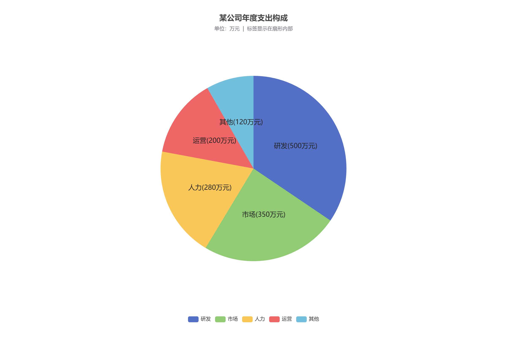
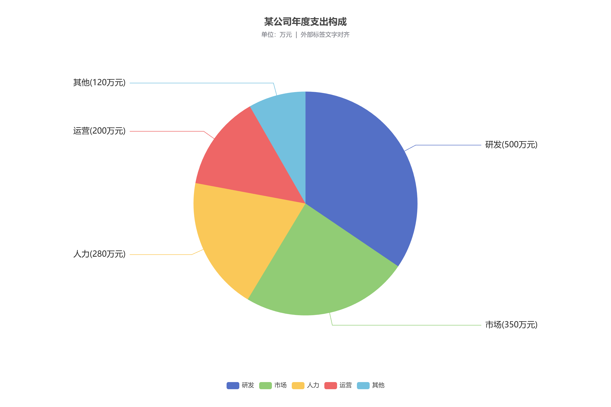
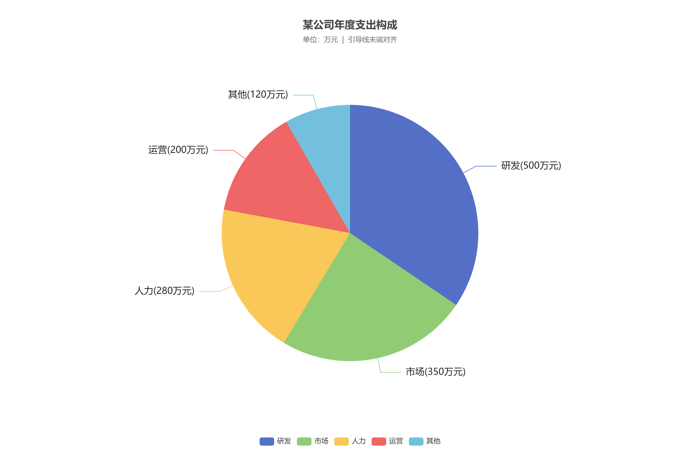

实验目的
掌握 formatter、position 和 alignTo 对标签的控制。
实验数据
| 类别 | 金额 / 万元 |
|---|---|
| 研发 | 500 |
| 市场 | 350 |
| 人力 | 280 |
| 运营 | 200 |
| 其他 | 120 |
实现要点
- 标签格式为“项目(金额万元)”，例如研发(500万元)。
- 三种效果分别使用 inside、outside + edge、outside + labelLine。
运行结果






完整配置
mode 支持 inside、edge、labelLine，可通过运行结果下的入口分别查看。
var mode = new URLSearchParams(location.search).get('mode') || 'inside';
var modes = {
inside: { name: '标签显示在扇形内部', position: 'inside', alignTo: 'none' },
edge: { name: '外部标签文字对齐', position: 'outside', alignTo: 'edge' },
labelLine: { name: '引导线末端对齐', position: 'outside', alignTo: 'labelLine' }
};
var setting = modes[mode] || modes.inside;
var myChart = echarts.init(document.getElementById('chart'));
var option = {
title: {
text: '某公司年度支出构成',
subtext: '单位：万元 | ' + setting.name,
left: 'center',
top: 30
},
tooltip: {
trigger: 'item',
formatter: '{b}：{c} 万元（{d}%）'
},
legend: {
bottom: 30,
data: ['研发', '市场', '人力', '运营', '其他']
},
series: [{
name: '年度支出',
type: 'pie',
radius: '55%',
center: ['50%', '50%'],
data: [
{ value: 500, name: '研发' },
{ value: 350, name: '市场' },
{ value: 280, name: '人力' },
{ value: 200, name: '运营' },
{ value: 120, name: '其他' }
],
label: {
show: true,
formatter: '{b}({c}万元)',
position: setting.position,
alignTo: setting.alignTo,
edgeDistance: '12%',
distanceToLabelLine: 8,
fontSize: 16,
color: '#222'
},
labelLine: {
show: setting.position === 'outside',
length: 25,
length2: 35
},
emphasis: {
itemStyle: {
shadowBlur: 10,
shadowOffsetX: 0,
shadowColor: 'rgba(0, 0, 0, 0.5)'
}
}
}]
};
myChart.setOption(option);